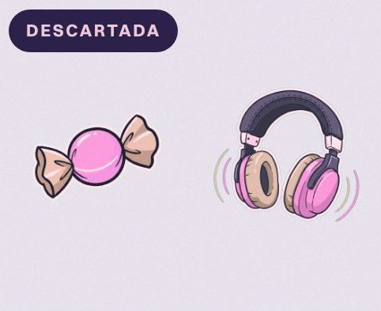
Pastel
Se veía tierna, pero sobre juegos claros perdía contraste y desaparecía.
estudio de caso · 02
Identidad visual completa para un canal de streaming. Pantallas, overlays y alertas que se sienten como un mismo cuarto.
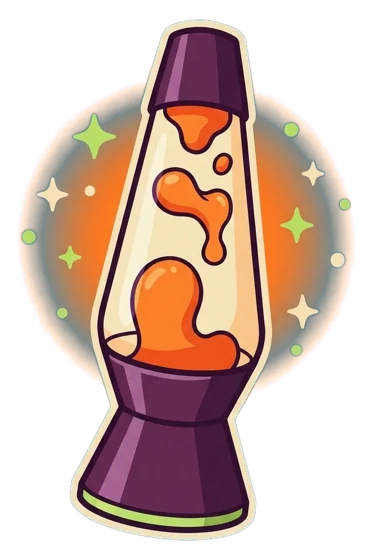
acto 1 · el conflicto y el brief
¿Cuál era la necesidad?
Muchos canales pequeños arman su stream con overlays gratuitos y plantillas sueltas. Funciona, pero cada pieza viene de un lugar distinto y el canal no se recuerda.
Como proyecto personal, me propuse diseñar la identidad completa de Reka, un canal de juegos y charlas con un tono relajado y nocturno. La meta era resolver todo el kit con un solo lenguaje visual.
lo que suele pasar
Un kit propio, coherente y listo para usar, que haga reconocible al canal desde la primera pantalla.
Proyecto personal pensado para OBS y Twitch. Escenas en 16:9 y alertas en formato cuadrado.
Espectadores jóvenes de streams de juegos y charlas. Miran desde la compu o el celular, muchas veces con el stream de fondo.
acto 2 · el proceso y la transformación
¿Cómo pensé y probé la solución?
Estas son las partes del proceso. Toca una para ir directo.
idear
Empecé por la pregunta ¿dónde está Reka cuando transmite? La respuesta fue su cuarto. Cada objeto del cuarto podía convertirse en una pieza del kit.
Pasa el mouse por cada objeto para ver en qué aviso se convierte. Toca cada objeto para ver en qué aviso se convierte.
cada objeto del cuarto se vuelve un aviso
“El stream es el cuarto de Reka. Cada objeto del cuarto se vuelve un aviso.”
la idea que ordenó todo el kit
Así las alertas dejan de ser íconos genéricos, como estrellas o corazones, y pasan a ser cosas que Reka tendría a mano. El espectador siente que entra a un lugar y no a una plantilla.
prototipar
Primero resolví todo a lápiz, la composición del cuarto y la silueta de cada objeto. Si una forma no se entendía en blanco y negro, no iba a funcionar a color.
prototipar
Probé cuatro paletas sobre las mismas dos alertas. La prueba clave fue ponerlas encima del azul de recorte y de juegos claros y oscuros.

Se veía tierna, pero sobre juegos claros perdía contraste y desaparecía.
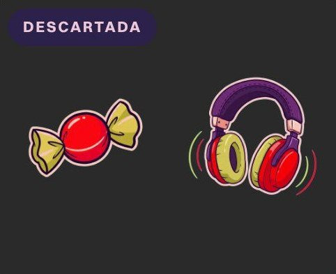
Demasiado agresiva para un canal tranquilo. Recordaba a comida rápida.
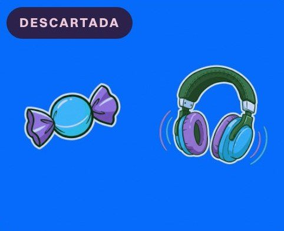
Se mezclaba con el azul de recorte y OBS borraba partes de la ilustración.
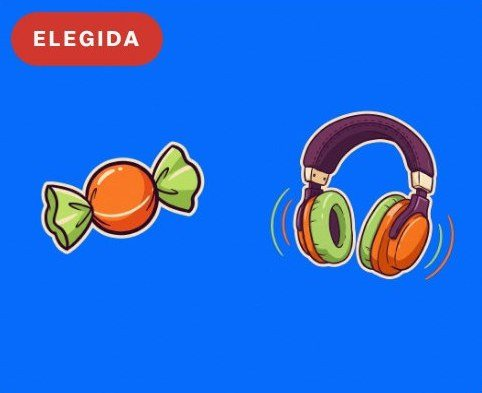
Cálida como la lámpara del cuarto, sin azules y con contraste sobre cualquier juego.
la paleta final del kit
Haz clic en un color para copiar su código.Toca un color para copiar su código.
prototipar
El nombre aparece en todas las piezas, a veces muy chico. Probé cuatro caminos para el rótulo de Reka.
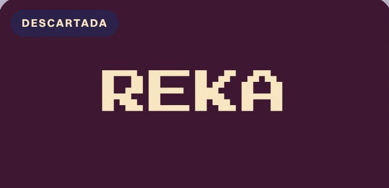
Dice “gamer” al instante, pero es un cliché y en tamaño chico los píxeles se rompen.
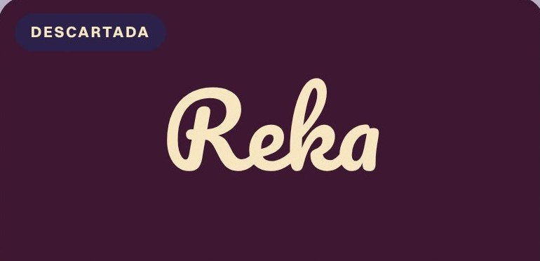
Cercana y suave, pero ilegible en la pestaña pequeña del overlay de cámara.
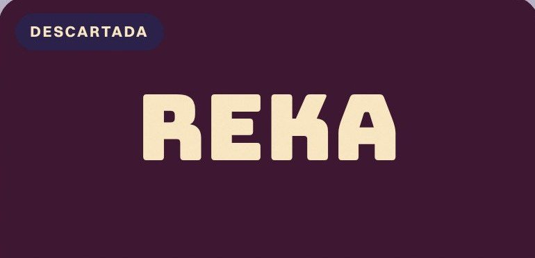
Muy legible, pero fría y recta. No combinaba con las líneas curvas de la ilustración.
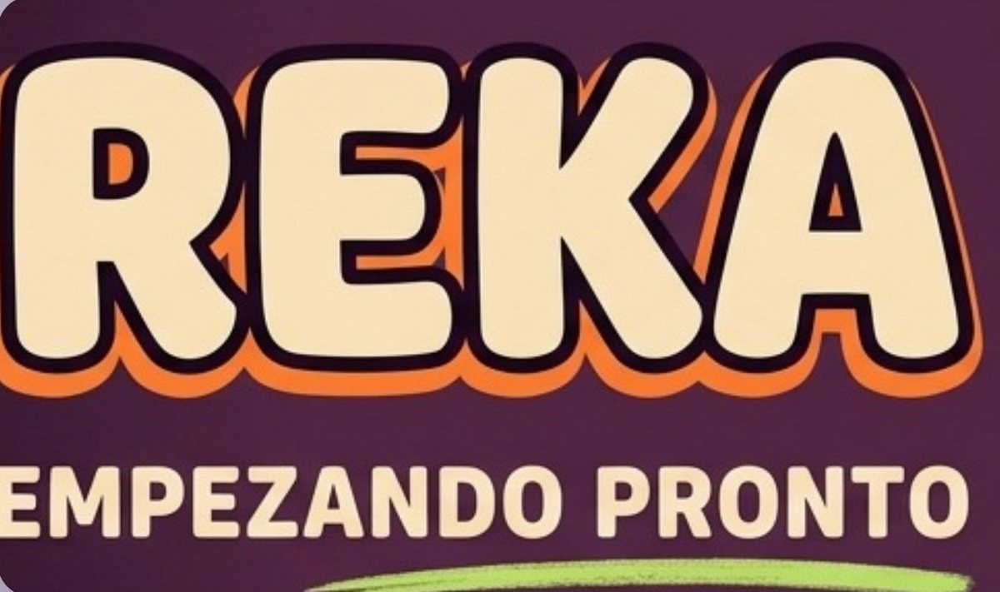
elegida
Tiene la misma curva que los objetos ilustrados y se lee incluso a 30 px. Los subtítulos van en una sans en mayúsculas para no competir con el nombre.
Prueba de escala. El rótulo debía funcionar desde la pantalla completa hasta la pestaña de la cámara.
definir
Con la idea, el color y la letra definidos, armé un sistema. Las mismas cinco reglas se repiten en todos los overlays.
jerarquía de bits · más bits, más tamaño, más brillo

Pequeño y simple. Un gesto rápido de apoyo.

Más grande y con movimiento propio.
El objeto con luz y destellos. El mayor aporte se siente especial.
El espectador entiende el valor del aporte sin leer el número.
acto 3 · el desenlace y el impacto
¿Cuál fue el resultado final y cómo funciona en la vida real?
pantallas de inicio y cierre
Empezando pronto. Atardecer en la ventana y el monitor encendido. El stream está por comenzar.
Es el mismo cuarto. Solo cambia la ventana, el día dice que empieza y la noche que termina.
así se ve en vivo · simulación
Cambia entre el overlay de juego y el de charla, y lanza cada alerta como si alguien te apoyara en el stream.
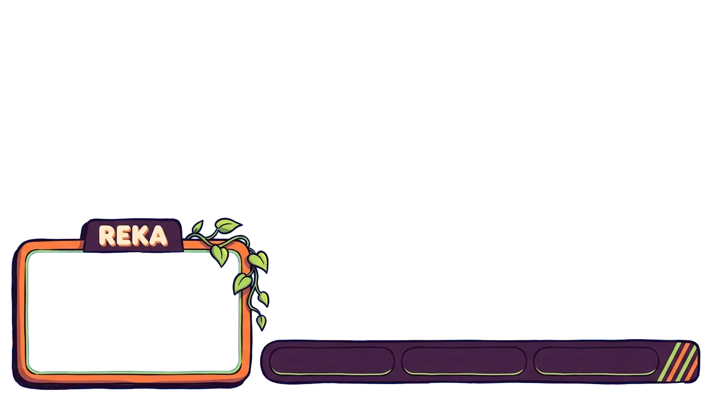
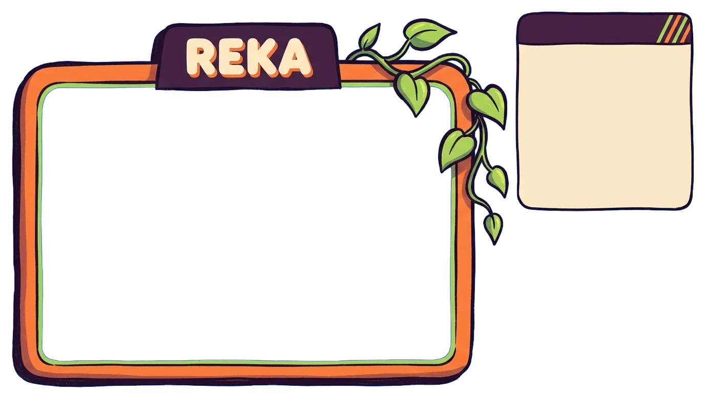
Overlay de juego. La cámara se reduce a una esquina y una barra delgada muestra las metas, así el centro queda libre para jugar. En el overlay de charla la cámara es protagonista y un panel crema guarda el chat.
las alertas · cinco objetos, cinco avisos
Pasa el mouse para verlas moverse. Haz clic para escucharlas.Se mueven al aparecer en pantalla. Toca una para escucharla.
dato técnico
En OBS cada alerta va sobre el azul de recorte. Aquí lo quité para que veas solo el objeto.
el impacto
Las 10 piezas comparten paleta, trazo y objetos. El canal se reconoce en cualquier escena.
Cada alerta es un objeto claro con su propio movimiento. Se entiende en uno o dos segundos.
Fondos de recorte y formatos para OBS. Cambiar de juego o de escena no rompe la identidad.
sección electiva b · gestión de restricciones
¿Cómo convertí cada límite en una decisión?
Un kit de stream tiene reglas técnicas que no se negocian. Así resolví cada una.
Paleta sin azules y un borde crema grueso alrededor de cada objeto. El recorte queda limpio, sin bordes sucios.
Un solo objeto por alerta, siluetas simples y contorno grueso. El rótulo se probó hasta 30 px.
Cada objeto tiene un movimiento propio y obvio. El avión vuela, la lata burbujea y los audífonos vibran.
En modo juego la cámara va a una esquina y la barra de metas es delgada. El centro queda libre y la planta solo crece en las esquinas.
Un sistema reutilizable con el mismo marco, la misma pestaña y cinco colores. Diseñar una pieza nueva es combinar, no empezar de cero.
Las escenas se componen con el cuarto a un lado. Las alertas van centradas y con aire para animarse sin cortarse.